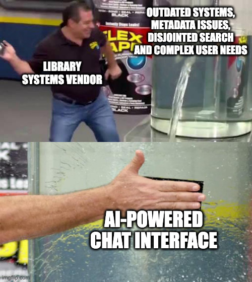

flowchart LR
W[Weights<br/>Learned numbers] --> M((Model))
C[Code<br/>Instructions] --> M
M --> T[Does tasks]
Open Source AI for GLAMs
From Using to Contributing
Daniel van Strien
Hugging Face
2025-12-09
About Me
- Machine Learning Librarian @ Hugging Face
- BigLAM / Small Models for GLAM
Part 1: What and Why?
What is Open Source AI?
- AI systems where key components are publicly accessible
- A spectrum: from “open weights” to fully open training pipelines
- Growing ecosystem of models, tools, and communities
What can Libraries do with AI?
The Chat Interface?
The Default Answer
“Let’s build a chatbot for our collections!”
But is this the best starting point?
AI: Ferrari vs Honda Civic
“A frontier model like GPT-4 is like a Ferrari. It’s an obvious triumph of engineering, designed to win races. But it takes a special pit crew just to change the tires.
In contrast, a smaller specialized model is like a Honda Civic. It’s engineered to be affordable, reliable, and extremely useful. And that’s why they’re absolutely everywhere.”
— Adapted from “Finally, a Replacement for BERT”
What Makes AI Open?
- Open weights vs closed weights
- Open weights vs open source?
- Open data?
What is an AI Model?
The weights are the “brain” - patterns learned from training data
What Are Weights?
flowchart TD
D[(Training Data<br/>Books, websites, images)] --> L[Learning Process]
L --> W[Weights File<br/>.safetensors]
W --> E["Billions of numbers:<br/>[0.023, -0.891, 0.442, ...]"]
These numbers encode everything the model “knows”
Open vs Closed Weights
Open Weights
flowchart TD
O[Download weights] --> R[Run anywhere]
R --> I[Inspect & modify]
Closed Weights
flowchart TD
A[API only] --> B[Black box]
B --> V[Vendor controlled]
Open Source (Beyond Weights)
True open source AI includes:
- Training code: How the model was built
- Training data: What the model learned from
- Evaluation details: How performance was measured
Examples of truly open models:
Why Open?
| Choice | 1M+ models vs ~100 closed APIs |
| Control | Run where you want, pin versions |
| Flexibility | Fine-tune for your domain |
| Cost | Often cheaper at scale |
| Privacy | Data never leaves your infra |
| Transparency | Inspect model & training data |
Part 2: How?
Choosing a Model
AI/ML is more than LLMs!
Many tasks don’t need a large language model:
- Classification: Categorize documents, detect languages
- Embeddings: Semantic search, similarity matching
- Vision: OCR, image classification, object detection
- Structured extraction: Named entities, dates, metadata
Finding models: Hugging Face Hub - 1M+ open models, filterable by task, language, size
Running the model
Open models != local models
A few genres of inference for open models:
- Pay per token via a hosted endpoint “serverless”
- Run the model on your own hardware (laptop, desktop, server)
- Rent the hardware to run the model and pay per hour
Tradeoffs
| Approach | Setup | Best For |
|---|---|---|
| Pay per token | Minimal | Prototyping, low volume |
| Local hardware | Medium | Privacy, offline use |
| Rent hardware | Higher | Production, scale |
Pay Per Token (Serverless)
Setup: Minimal - use via OpenAI-compatible client
Pros
- Quick to start
- No hardware needed
- Competitive pricing
- Easy model switching
Cons
- Vendor dependency
- Results can vary across providers
- Ongoing costs
- Data leaves your infrastructure
Local Hardware
Setup: Medium - install runtime + download model
Pros
- Full control
- Data stays local
- No ongoing costs
- Works offline
Cons
- Hardware limitations
- Model size constraints
- Setup/maintenance
- Updates are manual
Rent Hardware (Dedicated)
Setup: Higher - configure cloud instance
Pros
- Scalable resources
- Run any model size
- Dedicated capacity
- Production-ready
Cons
- Costs scale with usage
- Infrastructure complexity
- Requires DevOps skills
- Cold start times
Local hosting
mindmap
root((Local model ecosystem))
Python Libraries
Pytorch / Tensorflow / JAX
Transformers
Diffusers
Sentence Transformers
ONNX Runtime
Optimum
JavaScript
Transformers.js
Inference Frameworks
GPU Poor focused
llama.cpp
LM Studio
Ollama
MLX Apple Silicon
mlx-lm
mlx-vlm
ExLlamaV2
Jan
Enterprise Focused
vLLM
SgLang
Triton Inference Server
Quantization Formats
GGUF
GPTQ
AWQ
UIs
Gradio
Open WebUI
Model Selection Workflow
flowchart LR
Start([Start: No Training Data]) --> TestSOTA[Test with SOTA Closed Model<br/>Validate 'any model can do it']
TestSOTA --> CheckWorking{Working?}
CheckWorking -->|No| IteratePrompts[Iterate on Prompts]
IteratePrompts --> CheckIteration{Working Now?}
CheckIteration -->|Yes| TryOpenWeights[Try Open Weights Model]
CheckIteration -->|No| Rethink[Rethink Task]
Rethink --> TestSOTA
CheckWorking -->|Yes| TryOpenWeights
TryOpenWeights --> OpenWorking{Working?}
OpenWorking -->|Yes| TrySmaller[Try Smaller<br/>Open Weights Model]
TrySmaller --> CheckSize{Small Enough<br/>& Working Well?}
CheckSize -->|Yes<br/>Small & Working| Deploy1[Deploy & Capture Traces]
Deploy1 --> End1([Done])
CheckSize -->|No<br/>Too Big but Working| CreateData[Use Model to<br/>Create Training Data]
CheckSize -->|No<br/>Not Working Well| TestSOTA
CreateData --> FineTune[Fine-tune Smaller Model]
FineTune --> TestSmaller[Test Smaller Model]
TestSmaller --> Deploy2[Deploy & Share<br/>with Community]
Deploy2 --> End2([Done])
style Start fill:#e1f5ff
style TestSOTA fill:#fff4e1
style Deploy1 fill:#d4edda
style Deploy2 fill:#d4edda
style End1 fill:#d4edda
style End2 fill:#d4edda
style CheckWorking fill:#fff3cd
style CheckIteration fill:#fff3cd
style CheckSize fill:#fff3cd
style OpenWorking fill:#fff3cd
Part 3: A case study
Switch to notebook
Part 4: Contributing
How can GLAMs contribute to Open Source AI?
Contributing: Datasets
GLAMs hold unique assets for AI training:
- Curated collections: High-quality, well-documented data
- Domain expertise: Historical texts, scientific literature, archival materials
- Linguistic diversity: Multilingual and underrepresented language resources
- Rich metadata: Structured information often missing from web scrapes
Contributing: Evaluations
Move beyond “vibe checks” with domain expertise:
- Task benchmarks: Cataloging, transcription, metadata extraction
- Quality assessment: Expert evaluation of model outputs
- Edge cases: Cultural heritage contexts models often get wrong
- Bias detection: Identifying gaps in historical & cultural knowledge
Contributing: Models
Share trained models back to the community:
- Fine-tuned models: Adapt general models to your domain (historical texts, scientific literature)
- Specialized task models: OCR for historical typefaces, metadata extraction, document classification
- Embedding models: Better semantic search using domain-specific vocabularies
Thank You!
Let’s Connect
- Follow me on Hugging Face: huggingface.co/davanstrien
- Email: daniel@huggingface.co
- socials: https://linktr.ee/danielvanstrien
Questions?

danielvanstrien.xyz | Open Source AI for GLAMs